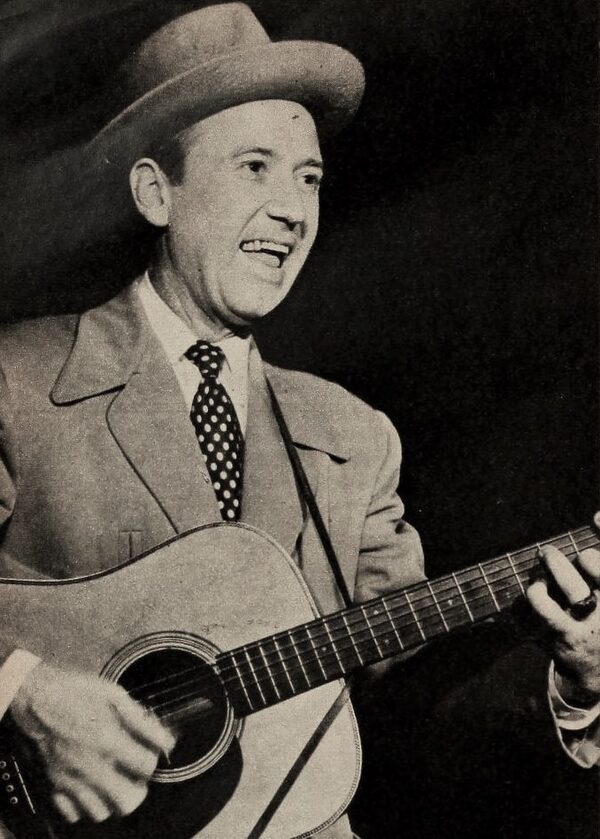
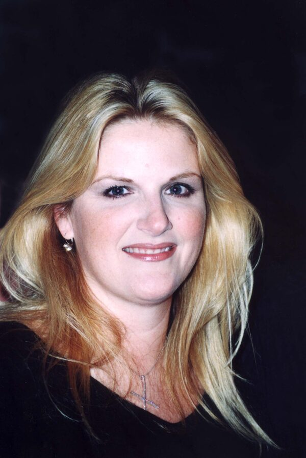
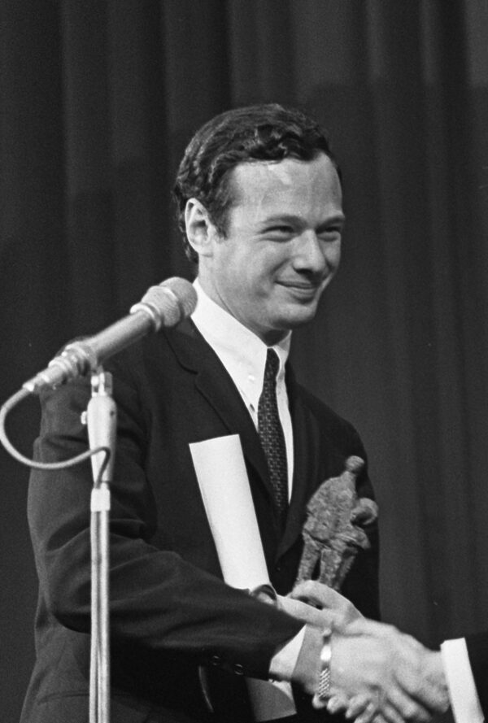
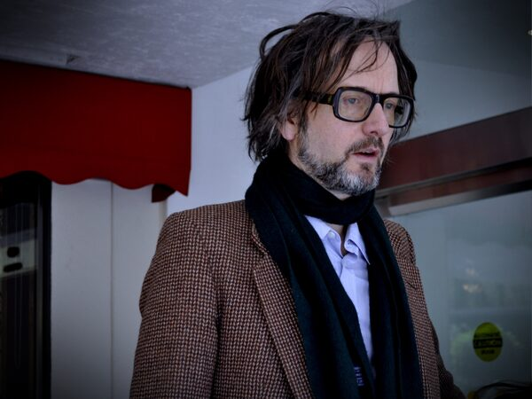
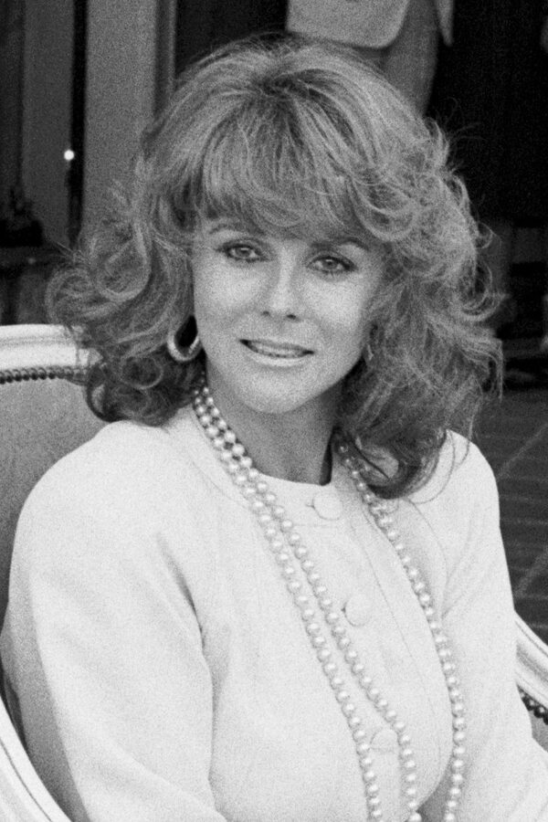
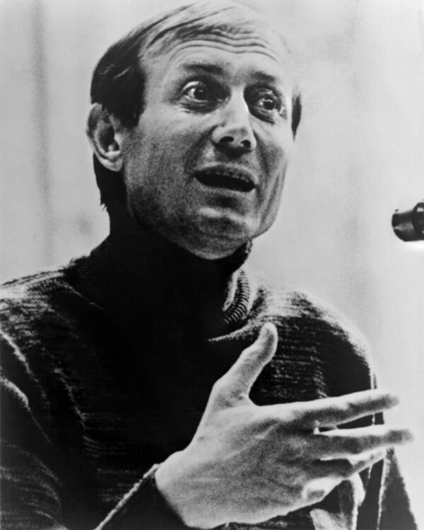

The Who begin recording Tommy at IBC Studios
The Who arrived at IBC Studios in London on September 19, 1968, to begin the sessions that would become Tommy, Pete Townshend's ambitious rock opera about a deaf, dumb, and blind pinball-playing boy, as Wikipedia details.
The album took six months to finish and turned the Who from singles act into stadium headliners, with Pinball Wizard becoming one of the record's signature tracks.
September 19 at a Glance
Tap any event to jump straight to its full card below.
| Category | Event |
|---|---|
| 1969 | |
| chart | Creedence Clearwater Revival score their only UK number one |
| release | Fleetwood Mac release Then Play On |
| 1968 | |
| industry | The Who begin recording Tommy at IBC Studios |
| death | Red Foley dies in Fort Wayne at 58 |
| 1967 | |
| release | Bee Gees release Massachusetts in the UK |
| 1965 | |
| broadcast | Dino, Desi & Billy perform I'm a Fool on Ed Sullivan |
| 1964 | |
| birth | Future country star Trisha Yearwood is born |
| culture | Beatles celebrate Brian Epstein's 30th birthday |
| 1963 | |
| birth | Future Pulp frontman Jarvis Cocker is born |
| broadcast | Ann-Margret voices Ann-Margrock on The Flintstones |
| 1962 | |
| chart | Sherry holds #1 as Surfin' Safari climbs the WMCA survey |
| 1961 | |
| culture | Yevtushenko publishes Babi Yar |
| 1960 | |
| chart | Chubby Checker's The Twist hits number one |
| chart | Hank Ballard lands three songs on the Hot 100 at once |
Creedence Clearwater Revival score their only UK number one
Bad Moon Rising by Creedence Clearwater Revival topped the UK Singles Chart on September 19, 1969, and held the spot for three weeks, per Official Charts.
It remains the only UK number one of the band's career, a stark warning-siren single John Fogerty wrote after watching the 1941 film The Devil and Daniel Webster, a rare crossover hit for the folk rock era's roots-rock wing.
Fleetwood Mac release Then Play On
Fleetwood Mac released their third studio album, Then Play On, in the UK on September 19, 1969, the last studio record to feature founding guitarist Peter Green, a mainstay of the British Invasion generation's blues-rock wing.
The album fused heavy blues with folk and progressive instrumentals, including Green's own Oh Well, and pointed toward the band's later sound even as Green left the group the following year, as Wikipedia notes.
The Who begin recording Tommy at IBC Studios
The Who arrived at IBC Studios in London on September 19, 1968, to begin the sessions that would become Tommy, Pete Townshend's ambitious rock opera about a deaf, dumb, and blind pinball-playing boy, as Wikipedia details.
The album took six months to finish and turned the Who from singles act into stadium headliners, with Pinball Wizard becoming one of the record's signature tracks.
Red Foley dies in Fort Wayne at 58
Country and gospel star Red Foley suffered respiratory failure and died in his sleep in Fort Wayne, Indiana, hours after playing two shows there on September 19, 1968, as Wikipedia records.
Foley had already shaped country music for two decades, discovering Brenda Lee and hosting the pioneering television show Ozark Jubilee before his death at 58.

Bee Gees release Massachusetts in the UK
Polydor released the Bee Gees' Massachusetts in the United Kingdom on September 19, 1967, a lush ballad the Gibb brothers wrote in New York and originally intended for the Seekers.
The song became the group's first UK number one and went on to top the charts in a dozen other countries, part of the same British Invasion era's pop wave, as Wikipedia confirms.
Dino, Desi & Billy perform I'm a Fool on Ed Sullivan
Teenage pop trio Dino, Desi & Billy, the sons of Dean Martin and Desi Arnaz plus their friend Billy Hinsche, performed their hit I'm a Fool live on The Ed Sullivan Show on September 19, 1965.
The clean-cut, organ-driven single fit neatly into the era's pop and Brill Building sound and gave the young band its widest television audience yet.
Future country star Trisha Yearwood is born in Monticello, Georgia
Patricia Lynn Yearwood was born in Monticello, Georgia, on September 19, 1964, the daughter of a schoolteacher and a small-town banker.
She would not release her breakthrough single until 1991, but Yearwood went on to become one of country music's defining vocalists, decades after the genre's 1960s foundations were laid.

Beatles celebrate Brian Epstein's 30th birthday over Missouri
Flying from their Dallas concert to a rest day at Reed Pigman's ranch in Alton, Missouri, the Beatles sang Happy Birthday to manager Brian Epstein just after midnight on September 19, 1964, and gave him an antique telephone, as The Beatles Bible records.
The celebration continued at the ranch, where their host had baked a cake with thirty candles, a rare quiet moment near the end of the Beatles' grueling first North American tour.

Future Pulp frontman Jarvis Cocker is born in Sheffield
Jarvis Cocker was born in Sheffield, England, on September 19, 1963, decades before he would front the Britpop band Pulp.
Cocker grew up on the British Invasion sound coming out of Liverpool and London, and he later credited that 1960s songwriting craft as a direct influence on his own sharp, observational lyrics.

Ann-Margret voices Ann-Margrock on The Flintstones
Ann-Margret guest-starred as the singing sensation Ann-Margrock in the Flintstones episode Ann-Margrock Presents, which aired on ABC on September 19, 1963.
She performed two songs in the episode, including I Ain't Gonna Be Your Fool No More, bringing a real pop star's voice into Saturday morning's biggest cartoon.

Sherry holds number one as Surfin' Safari climbs the WMCA survey
New York's WMCA Good Guys Survey dated September 19, 1962 had the Four Seasons' Sherry sitting at number one while the Beach Boys' Surfin' Safari climbed to number two, per the WMCA survey archive.
The pairing captured a hinge moment in early 1960s pop and Brill Building radio, polished East Coast vocal harmony sharing the airwaves with the raw new California surf sound.
Yevtushenko publishes Babi Yar, later inspiring Shostakovich's 13th Symphony
Soviet poet Yevgeny Yevtushenko published Babi Yar in the newspaper Literaturnaya Gazeta on September 19, 1961, confronting Soviet silence around the Nazi massacre of Kiev's Jewish population and lingering antisemitism at home, as Wikipedia recounts.
Composer Dmitri Shostakovich later set the poem as the opening movement of his Symphony No. 13, a piece so politically charged that Soviet authorities pressured performers to avoid it.

Chubby Checker's The Twist hits number one
Chubby Checker's cover of The Twist reached number one on the Billboard Hot 100 on September 19, 1960, a song originally written and recorded by Hank Ballard and the Midnighters two years earlier, as Wikipedia confirms.
The Twist returned to number one again in January 1962, the only song in Hot 100 history to top the chart in two separate, non-consecutive runs, part of the same early pop and Brill Building era that shaped the decade's dance crazes.
Hank Ballard and the Midnighters land three songs on the Hot 100 at once
The same week Chubby Checker's cover hit number one, Hank Ballard and the Midnighters became the first group in Billboard history to place three singles on the Hot 100 at once, Finger Poppin' Time, Let's Go, Let's Go, Let's Go, and their own original version of The Twist, a milestone the Vocal Group Hall of Fame credits them with.
Ballard had refused to perform The Twist on national television, which is why Dick Clark turned to Chubby Checker for the cover that made the dance a craze, even as Ballard's own influence on early Motown, Soul & R&B quietly compounded.
Frequently Asked Questions
What happened in 1960s music on September 19?
September 19 produced 14 verified music events across the decade, headlined by the Who beginning to record their rock opera Tommy at IBC Studios in 1968.
The same date saw Chubby Checker's The Twist hit number one in 1960, the Bee Gees score their first UK number one with Massachusetts in 1967, and Creedence Clearwater Revival's only UK chart-topper, Bad Moon Rising, in 1969.
Did Chubby Checker's The Twist really hit number one twice?
Yes.
Chubby Checker's cover of The Twist topped the Billboard Hot 100 on September 19, 1960, then returned to number one for two more weeks starting January 13, 1962, the only song in Hot 100 history to reach number one in two separate, non-consecutive chart runs.
Why did the Who start recording Tommy on this date?
Manager and producer Kit Lambert pushed the Who to move beyond their singles-based sound, and the band booked IBC Studios in London starting September 19, 1968, to begin Pete Townshend's concept album Tommy.
The sessions ran for six months and produced the double LP that turned the Who into an arena-level act.
What is the connection between Brian Epstein's birthday and the Beatles' 1964 tour?
Brian Epstein was born on September 19, 1934, which made his 30th birthday fall during the Beatles' first North American tour in 1964.
The band sang Happy Birthday to him aboard a plane just after midnight while flying from their Dallas concert to a rest day at a Missouri ranch.
When did the Bee Gees release Massachusetts?
Polydor released Massachusetts in the United Kingdom on September 19, 1967.
It became the Bee Gees' first UK number one single and eventually topped the charts in a dozen other countries.